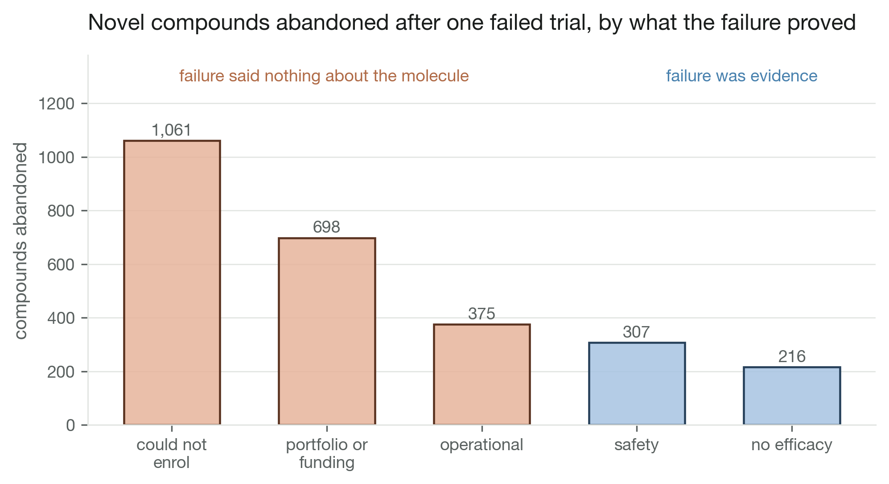
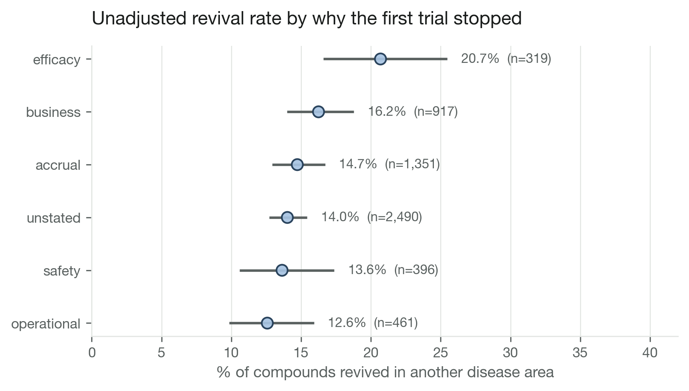

Advocacy partners and trial enrollment failure
matched registry study of trials that stop for lack of patients
- skills
- matched cohort design · coarsened exact matching · bootstrap inference · registry API pipelines · text classification scored against hand labels
- tools
- data
- ClinicalTrials.gov API v2 · MeSH condition ancestors · AACT mirror (cross-check) · hand-labelled gold sets
- status
- in progress
question
Do trials that partner with a patient advocacy organization stop early for poor enrollment less often than comparable trials?


calls made
- three stop-reason classes with an explicit ambiguous bucket, not a binary accrual label. text saying nobody enrolled without saying why is not evidence of accrual failure.
- blank stop reasons dropped from the outcome by default. counting them as non-accrual keeps the sample but biases toward the null if the blanks are quietly accrual failures. both branches coded.
- bootstrap whole matching strata, not individual trials. controls were drawn for a specific treated trial, so they are not independent of it.
- effect reported in days of avoided delay, not dollars. the industry per-day cost figure circulates with a wide range and thin provenance.
what broke
- pulled version history with ten parallel workers and no delay. the endpoint 403'd the whole address after a few hundred requests, so planned-enrollment and planned-date outcomes are still unmeasured.
- the disease-area covariate came back silently empty: the API field the cohort builder read is blank in this version, so every trial fell into one unmapped bucket until MeSH ancestors were pulled instead.
- the novel-compound filter had no registry-coverage floor, so ubiquitous old drugs counted as novel.
- interim tables were built ad hoc under a gitignored directory and never committed, so a fresh clone could not rerun the notebooks.
what i tried
version history at ten workers, no delay. throttled, cached and run overnight now.
not shown
- enrollment shortfall and schedule slip are planned outcomes, not yet measured